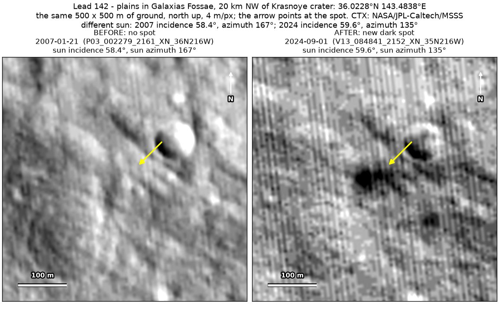
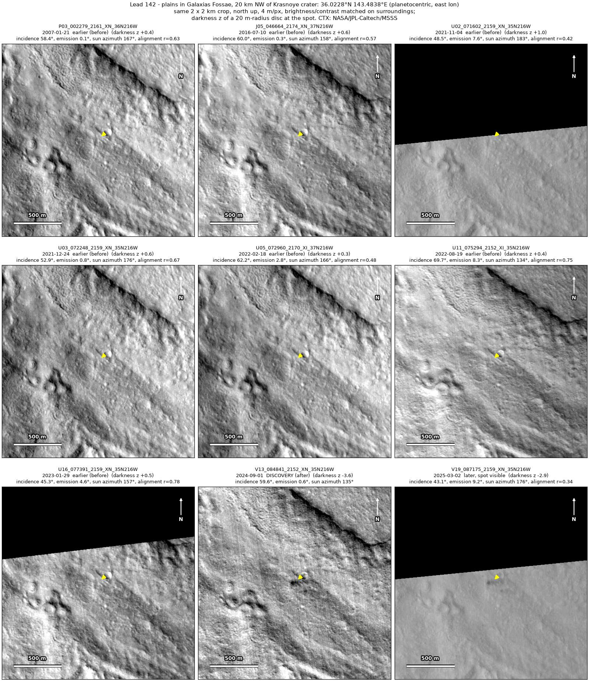
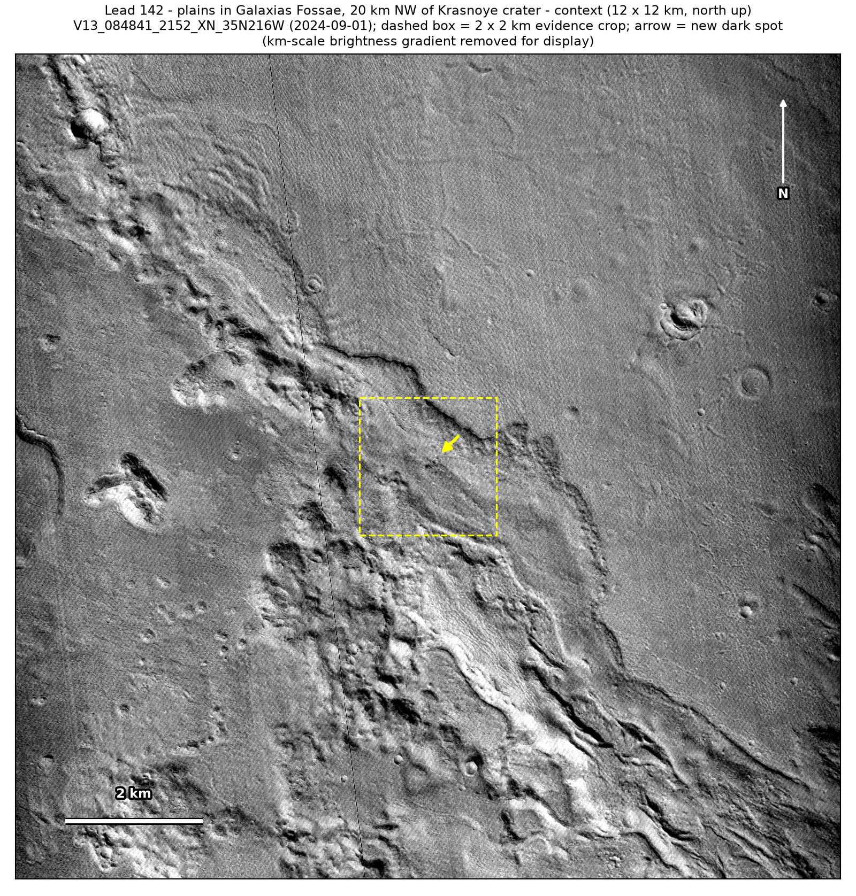

Professor of Mathematics
Paata Ivanisvili
Department of Mathematics, University of California, Irvine

← Possible new impact sites on Mars
Candidate 142: Plains in Galaxias Fossae, 20 km north-west of Krasnoye crater
Strong · roughly 85%

What changed. A compact dark spot about 50 m across, with a smaller one 140 m to its south-east, appeared on plains in Galaxias Fossae, 20 km north-west of Krasnoye crater, between January 2023 and September 2024 and is still there in March 2025, in two CTX images from two orbits.
Why it may be a new impact. Seven earlier images from 2007 to 2023 show plain ground there, while the shaded inner wall of a small crater 100 m away shows in the six that can be checked, and a compact pair of new dark spots is the usual look of a small impactor that broke up in the air.
- Location
- 36.023° N, 143.484° E
- Absent
- 21 January 2007, 10 July 2016, 4 November 2021, 24 December 2021, 18 February 2022, 19 August 2022 and 29 January 2023
- Present
- 1 September 2024 and 2 March 2025
- Size
- Compact dark spot about 50 m across (94 × 46 m with its tail to the east in the September 2024 image, 38 × 44 m in the March 2025 one), plus a smaller new spot of 38 × 34 m, 140 m to the south-east
- Confidence
- Strong candidate; roughly 85% that it is a new impact.
- Caveat
- The March 2025 image lies at the edge of its strip and lines up only moderately well, and the main spot lies about 90 m outside the rim of a small crater, so a small dust avalanche off that rim cannot be fully ruled out, although the spots are blobs on nearly flat ground, not fans. Unless broad brightness differences are removed, the aligned before-and-after difference reads slightly deeper near a shaded scarp 750 to 1,100 m away than at the spot. It lies outside every footprint of the high-resolution HiRISE camera; the nearest ends 13.7 km away. Like every candidate here, it is unconfirmed: see the caveat.

